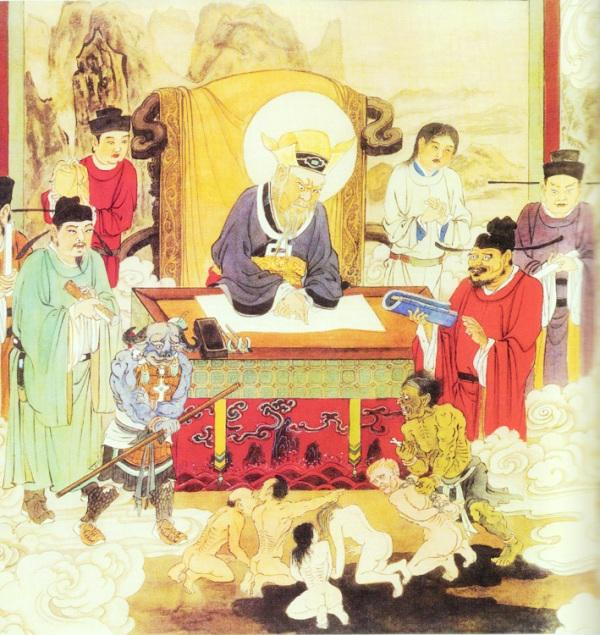

阿玉頂禮地藏菩薩！真開心又沾法益！
地藏菩薩開示阿玉五戒，守五戒可保人身乃做人之基本，不會墮落，看似很簡單，但有很多眾生都在不知不覺中犯了。我們經常會聽到身邊有些人說我從來沒有做過殺人放火害人的事，普通市民一個。其實殺人放火已經是很嚴重的身罪，要下地獄受報的。我們現在來聽聽地藏菩薩的慈悲開示，聽的如果有錯，是阿玉自己的問題，阿玉簡要複述菩薩開示如下：
一、不殺生— 禁止奪取任何有情生命，清淨素食是守此戒的基本，何為清淨？要嚴格守護《楞嚴經》之教義，與其有關身份不服不用，既是與所有動物有聯繫的食品都不能吃。例如：牛奶、蛋、蜂蜜、芝麻、牛油等等與動物有關的都要戒之，化妝品有很多都有動物成分也不能用。當我們生病時吃藥，特別是中藥亦很多有動物成分。
二、不偷盜—沒經過他人同意將物品據為己有是為偷。有很多人在公司，都有將公司的一些文具自用甚至拿回家用，又或者在公司打私人電話，手提電話在公司充電，用公司的複印機傳真機辦理私人文件等等，如沒得到公司同意，這些都屬於犯偷盜戒。
三、不邪淫—夫妻以外的性關係。非時非地非器、觀看色情光碟、用助淫工具，這些都屬於犯此戒。
四、不妄語—說實語，不欺騙他人。有就說有，沒有就不要說有，刻意欺騙更嚴重犯此戒；方便妄語盡量不說，因當說多了意識上不好，容易習慣成自然。
五、不喝酒—戒酒及麻醉品。與酒有關的產品都不能吃。例如腐乳多數有酒不能吃，儘管賣的老闆會說只是用了很少很少酒，只要是有一點點也是酒，除非藥用是為了救命的可開方便，還有很多化妝品都是有酒精成分的，就最好不要用。
恭聽地藏菩薩開示後，阿玉繼續前去見判官了。
判官阿彌陀佛！今天想請教判官關於亂倫的果報。
判官說，亂倫是道德敗壞，擾亂社會風氣，破壞人倫正氣的行為，地府會嚴懲此類眾生。但凡犯此類邪淫眾生，生前每次折福折壽2個半月，壽終入邪淫地獄之倒輪地獄受苦500年、抱銅柱地獄500年、鐵床地獄500年、煙花翻滾地獄500年、劍林地獄500年，這個只是普遍的亂倫所判出的刑罰，當然具體刑罰要看實際事件作最終定論，一剎那乘白蓮花已到倒輪地獄了，這裡的男靈比女靈多。
在這個地獄的亂倫靈，全是跟自己同輩分的異性親人行淫。即男跟嫂子、弟婦、姐姐、妹妹，又或者是妻子家中的同輩分已婚異性行淫。女跟姐夫、妹夫、哥哥、弟弟，或者丈夫家中的同輩分已婚異性行淫。
倒輪冰天地獄是有個很大的輪會轉動，四面是很冷的冰牆壁，上面是有點像一面鏡子的冰，就叫冰鏡吧。這冰鏡跟四面冰牆的冰不一樣，它有一種透明度及照射度，總之有鏡子的功能，可以照見輪裡面的情形；那面鏡子會不停飛出一些透明的冰，打在轉動輪中受刑眾生的靈體上。
此時見一個男靈全身赤裸的走向大輪，大輪會吸住他把他整個關在輪裡轉動，冰鏡會放出冰打在男靈身上，每一塊冰都會打的罪靈流血斷手斷腳，痛苦萬分，罪靈會拼命往外逃。可是當他托著受傷的身軀好不容易暫時離開大輪，外面的鬼差拿著叉子把他叉起來又再丟進去，情況非常慘烈，阿彌陀佛！
這時判官叫我再去旁邊的彩花劍林地獄看看，這個地獄是生前犯跟自己直系親屬或被強逼、或自願行邪淫的罪。男跟女兒、孫女、婆婆、奶奶或妻子家中的直系親屬異性；女跟父親、孫子、爺爺、公公或者是丈夫家中直系親屬行邪淫。此地獄裡面有無數看似漂亮的花，這些花有很多機關，花會變色，看著這花好像很吸引人。
這時有個男靈光著身子充滿淫念的想去取花，花很快變了形纏在他的身上。當花慢慢向下纏到男靈生殖器的位置時，就會立刻把生殖器切斷，血花濺到一地，血肉淋漓，之後花又會變成無數硬花片不斷飛來把罪靈打到昏死過去，昏死後會有鬼差來用寒冰液體淋在罪靈臉上令他甦醒過來，之後又不停重重複複受罪，繼續承受一次次痛苦萬分的經歷，早知如此又何必當初呢！
判官說：「人間亂倫邪行為天地所不容，罪大惡極，決定重判嚴懲，無可赦免，以彰顯陰律之無私。」
今天就到此為止了，改天再來。
拜別判官，謝謝判官的引導！
轉載《陰律無情》